Este proyecto está protegido
Qonto
Rediseño del flujo de cierre de cuenta para que marcharse sea claro, justo y seguro, y para que Qonto entienda por qué se van sus clientes y recupere a los que de verdad puede ayudar. Proteger primero, aprender después y retener solo cuando realmente ayuda.
Rol
Año
Equipo
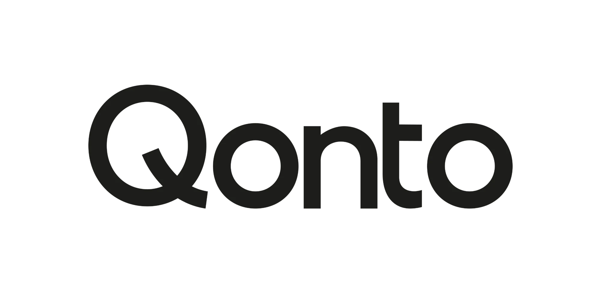
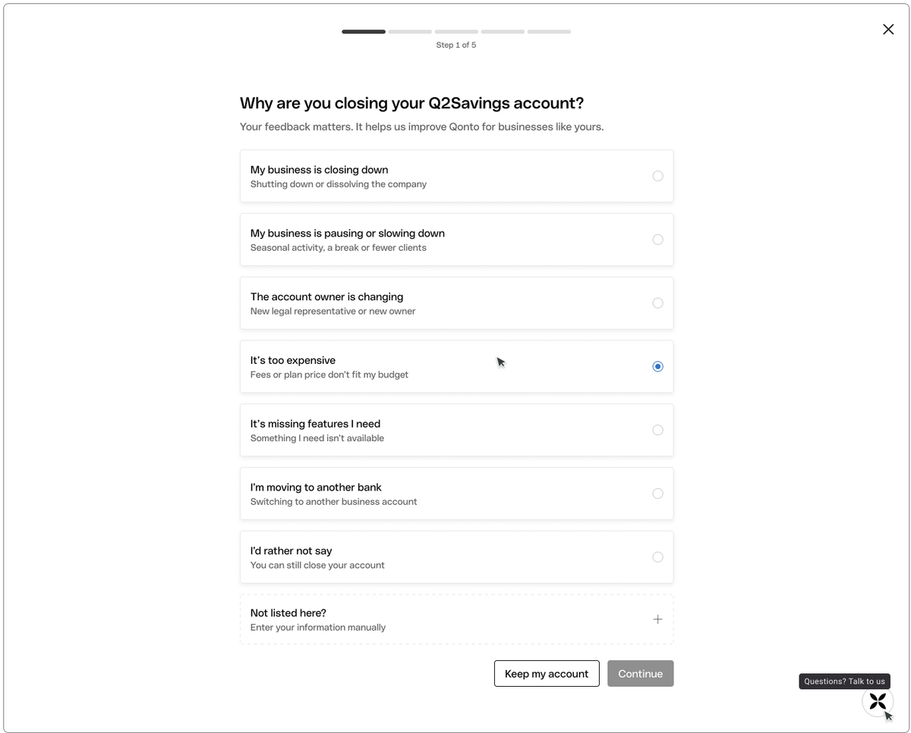
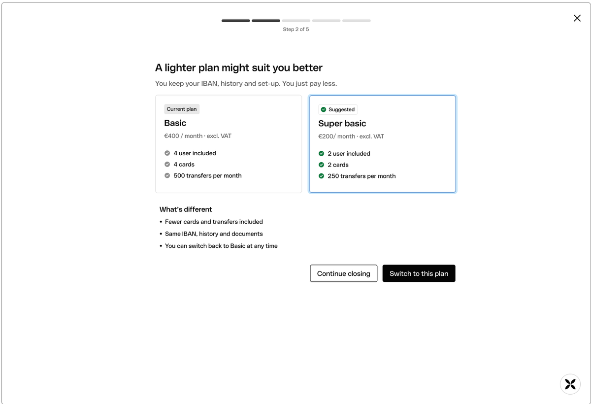
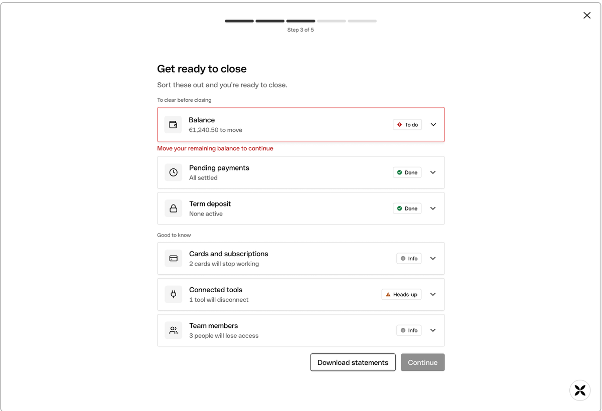
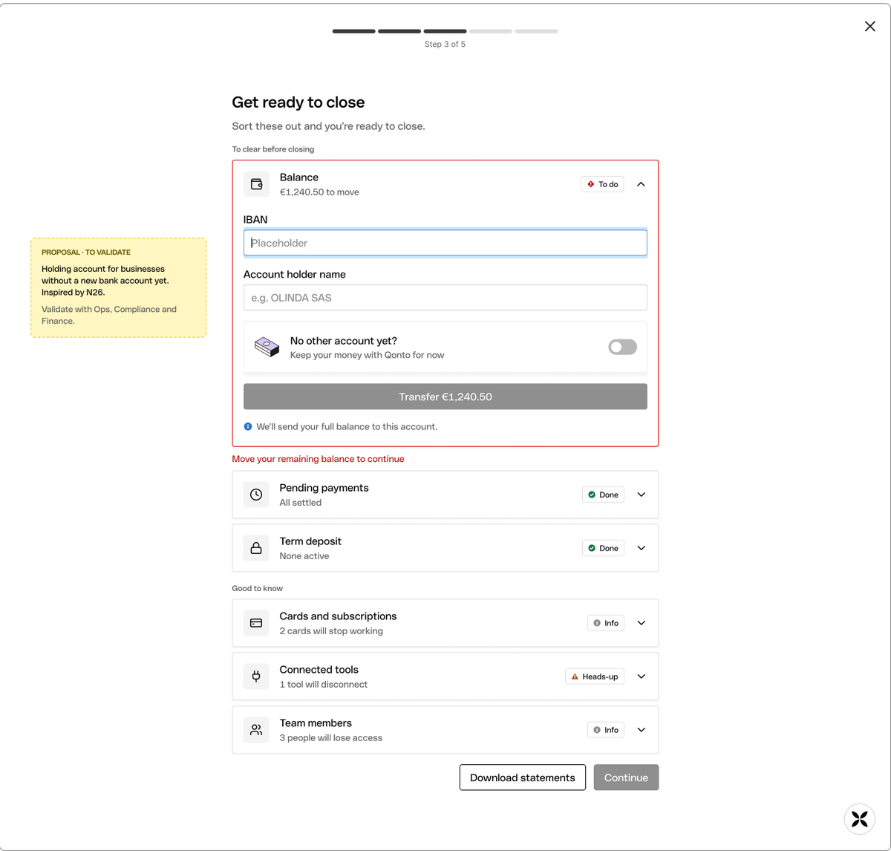
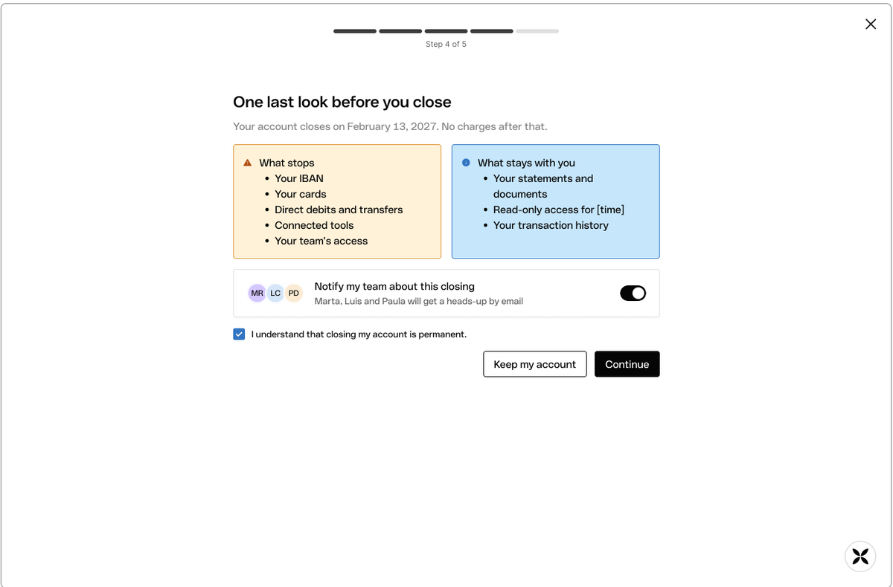
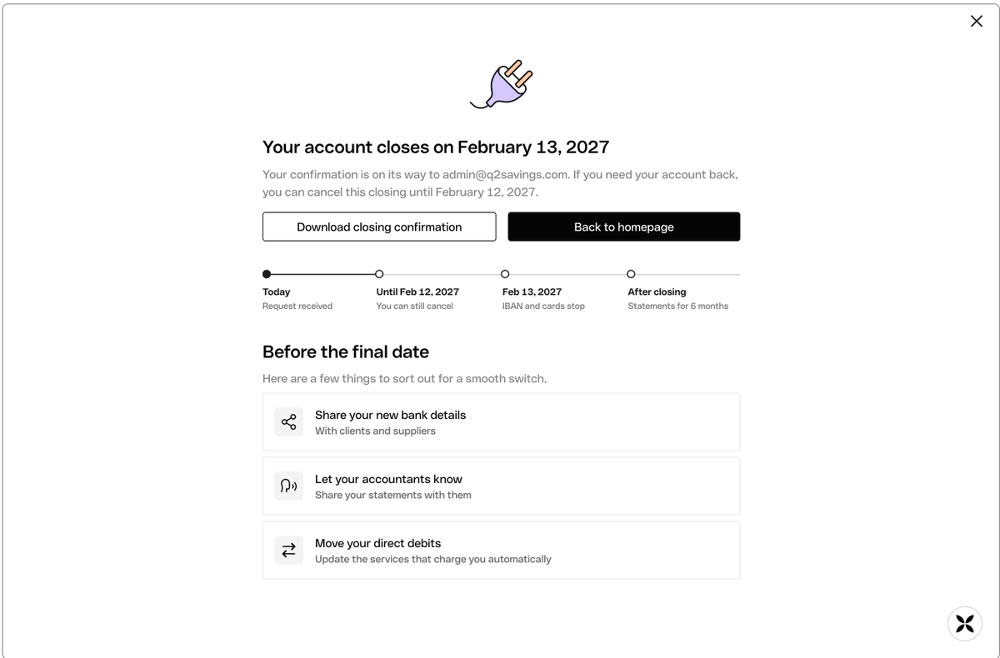
Cerrar una cuenta es un momento delicado
Cerrar una cuenta es un momento sensible y de alto impacto: suele ser el último contacto con el cliente, pero también una oportunidad única para aprender de su experiencia y, cuando es posible, recuperarlo.
Un cierre seguro
Recoger feedback
Recuperarlos
Un flujo que informa, pero no ayuda
Analicé una a una las cinco pantallas del flujo actual: qué funciona y conviene conservar, los puntos de dolor (posibles riesgos para la persona) y las mejoras de diseño. Esta tabla resume el análisis.
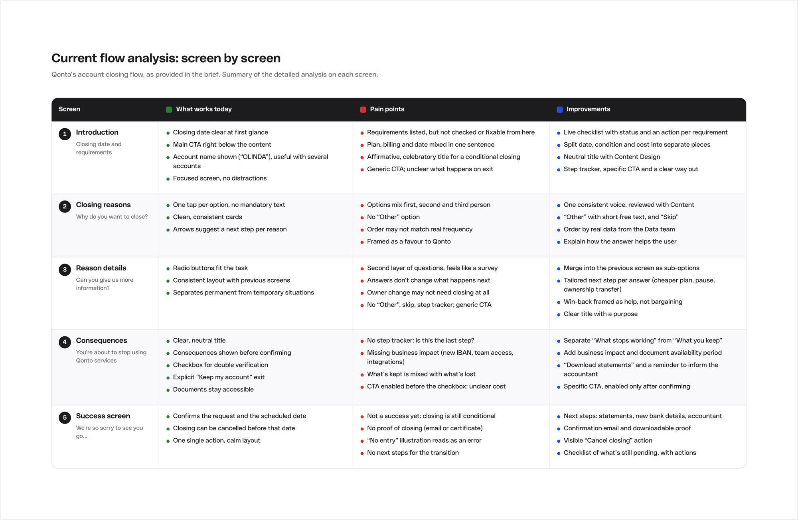
Resumen del análisis de las cinco pantallas: introducción, motivos, detalle del motivo, consecuencias y confirmación.
Seis conclusiones
Dice qué hacer, pero no ayuda a hacerlo
Pregunta por qué se van, pero no escucha
El estado del cierre nunca está claro
Trata el cierre como un momento, no como una migración
No sabes dónde estás
El tono cambia de pantalla en pantalla
Qué hacen otros bancos y fintech al cerrar
Analicé el proceso de cierre de 7 bancos y fintech, entre ellos Revolut, Shine, N26, Wise y BBVA, a partir de sus centros de ayuda y guías de terceros. Reconstruí cada flujo en Figma y anoté qué copiar y qué evitar. Los diseños y textos de esas reconstrucciones son supuestos, no las interfaces reales.
- Los requisitos recaen en el usuario. En casi todos, el saldo a 0 €, los pagos pendientes y los extractos se resuelven fuera del flujo. Una lista viva con acciones en línea sería un diferenciador real.
- El saldo sobrante, dentro del flujo. N26 pide el IBAN donde enviar lo que queda en lugar de bloquear el cierre. Inspiró mi paso para mover el saldo.
- Una alternativa que conserva el IBAN. BBVA ofrece convertir la cuenta y Wise propone transferir la titularidad: cuando el motivo es una pausa o un cambio de titular, no hace falta cerrar.
- El motivo se pregunta, pero no cambia nada. Revolut y Shine recogen el motivo sin adaptar lo que sigue, y la oferta de retención, cuando existe, es genérica.
- «Mantener mi cuenta» siempre visible. Revolut mantiene la salida en cada paso: una forma respetuosa de echarse atrás, sin dark patterns.
- Los extractos se pierden al cerrar. En Shine y Wise el acceso termina al cerrar. Que Qonto los mantenga disponibles es un diferenciador que hay que decir claro, no esconder en un aviso.
- Casos límite reales. Wise tiene una vía para liquidación o insolvencia y N26 da plazos claros tras la solicitud. Esos casos conviene derivarlos a soporte.
- Un tono calmado y práctico. El corazón roto y el «sentimos que te vayas» funcionan en B2C; para una empresa encaja mejor un tono sereno y práctico.
Una conversación que cambió el enfoque
Hice una entrevista telefónica de unos 25 minutos a la directora administrativa y de RR. HH. de una residencia de mayores en España, que gestiona las cuentas bancarias de la empresa. Es una sola persona, con experiencia en banca tradicional y no en neobancos, así que trato lo aprendido como hipótesis por validar con datos de Qonto y más entrevistas.
1. Cerrar es una migración, no un momento
2. Cerrar es una decisión compartida
3. Los documentos importan antes y después
4. Las ofertas de última hora resultan oportunistas
5. Marcharse no es para siempre
6. En decisiones delicadas se quiere a una persona
7. La prueba de cierre genera confianza
Limitación: un solo participante. Estas conclusiones son hipótesis que habría que contrastar con los datos de Qonto y con más entrevistas.
Del análisis a cinco hipótesis
El problema
Para una empresa, cerrar una cuenta no es un momento sino una migración: mover el dinero, compartir los nuevos datos bancarios, avisar a la asesoría y conseguir la aprobación de otras personas. El flujo actual lo trata como una lista de requisitos que leer y un formulario que rellenar: enumera requisitos sin ayudar a cumplirlos, pregunta por qué se van sin actuar sobre la respuesta y deja poco claros el estado del cierre y los siguientes pasos. Como resultado, las empresas cargan solas con el riesgo y el esfuerzo, y Qonto pierde la oportunidad de aprender de quienes no necesitaban irse.
Objetivos
Para la persona
- Irse con seguridad: sin pagos rotos, adeudos fallidos ni cargos sorpresa
- Saber exactamente qué hacer, cuándo se cierra la cuenta y cuánto costará
- Superar la transición: mover el dinero, compartir los nuevos datos bancarios y avisar a la asesoría
- Conservar el acceso a los extractos y tener una prueba del cierre
- Saber si cerrar es siquiera necesario (una pausa, un plan más barato, un cambio de titular)
Para el negocio
- Retener a los clientes que no necesitaban irse, con ofertas relevantes para ellos
- Capturar motivos de cierre estructurados y accionables
- Reducir los contactos a soporte y el trabajo manual de Ops
- Cumplir con la conservación de datos, las aprobaciones y la información obligatoria
- Dejar una buena última impresión, para que puedan volver
Cinco hipótesis
H1 · Requisitos sobre los que se puede actuar
H2 · Siguiente paso según el motivo
H3 · Apoyo en la transición
H4 · Estado claro y prueba de cierre
H5 · Roles y aprobaciones visibles
Métricas de éxito
Principales
- Solicitudes de cierre completadas sin contactar con soporte (H1, H4)
- Cierres completados en la fecha prevista, sin aplazarse (H1)
Operaciones
- Tickets de soporte por cierre, durante y después del flujo (H1, H3, H4)
- Incidencias tras el cierre: adeudos fallidos, transferencias devueltas, cargos inesperados (H3, H4)
Win-back
- Usuarios que eligen una alternativa y siguen activos a los 90 días (H2)
Información
- Cierres con un motivo accionable, no omitido ni vago (H2)
Guardarraíles
- Tiempo de finalización de quienes ya han decidido cerrar (sin fricción añadida)
- Satisfacción de quienes cierran, con una breve encuesta de salida (sin pérdida de confianza)
- Cierres cancelados antes de la fecha prevista (un pico indicaría consecuencias poco claras)
Un flujo guiado por las hipótesis
La arquitectura propuesta parte de Ajustes → Cerrar cuenta y organiza el flujo en cuatro pasos principales (por qué te vas, prepararte para cerrar, revisar y confirmar, cierre programado), más lo que ocurre después, fuera de la app. Cada paso se vincula a las hipótesis: en naranja, las decisiones que salieron de la investigación y, con línea discontinua, los casos límite.
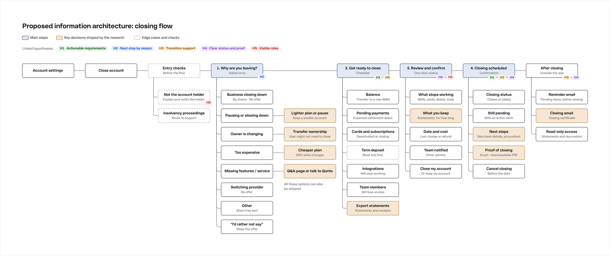
Antes del flujo hay comprobaciones: si quien entra no es el titular de la cuenta, se le explica y se avisa al titular (H5); en procedimientos de insolvencia se deriva a soporte.
De la lógica a las pantallas
El escenario que diseñé
Una pequeña empresa encuentra Qonto demasiado caro y decide cerrar su cuenta. Qonto le sugiere un plan más ligero, pero lo rechaza y continúa. Antes de cerrar, mueve el saldo restante a su nuevo banco, revisa qué dejará de funcionar y qué se mantiene, y completa el cierre.
Los nombres de cuenta, importes y fechas que aparecen en las pantallas son datos de ejemplo.
Antes de pasar a alta fidelidad probé la estructura con wireframes de baja fidelidad del escenario propuesto: el motivo, la opción de un plan más ligero, prepararse para cerrar (con y sin resolver el saldo), la última revisión y la confirmación. Cada pantalla lleva anotada su intención.
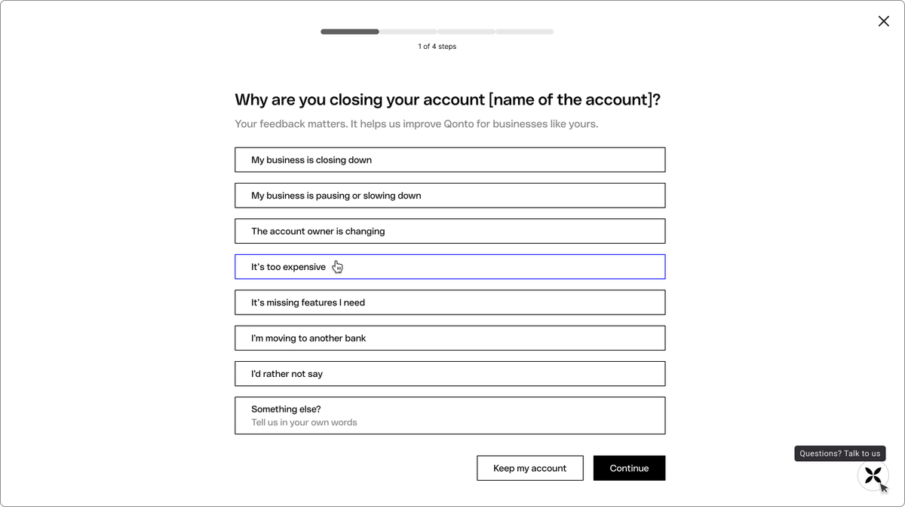
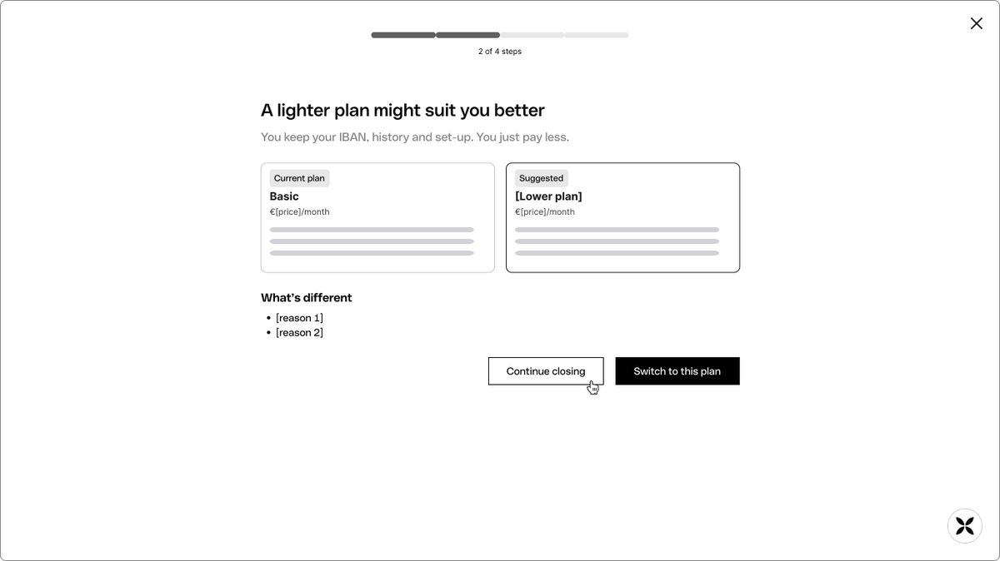
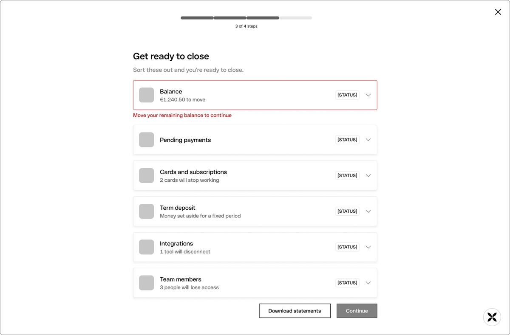
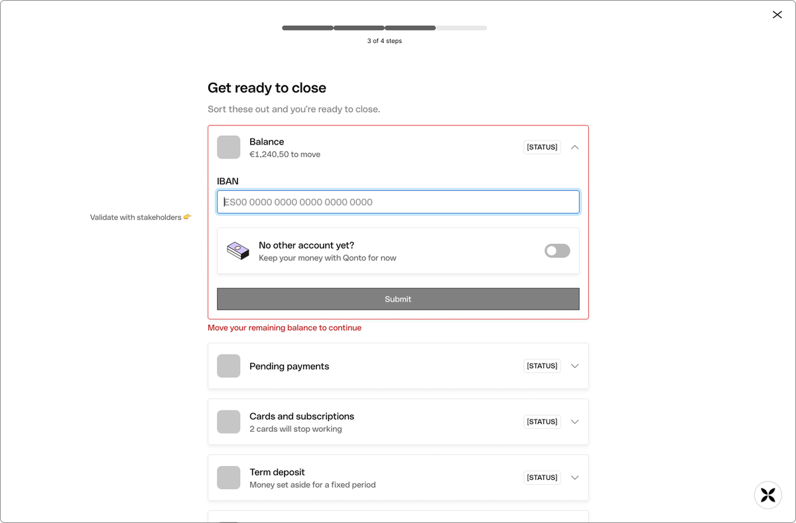
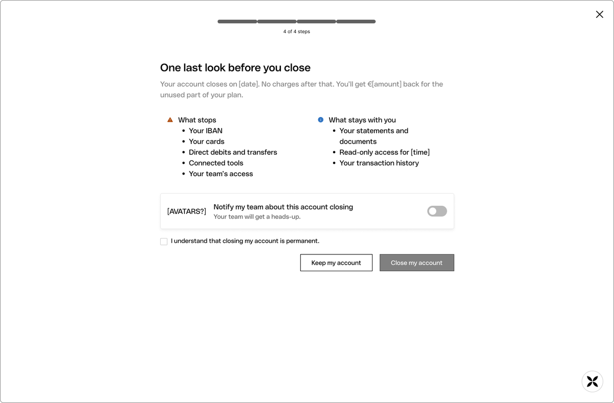
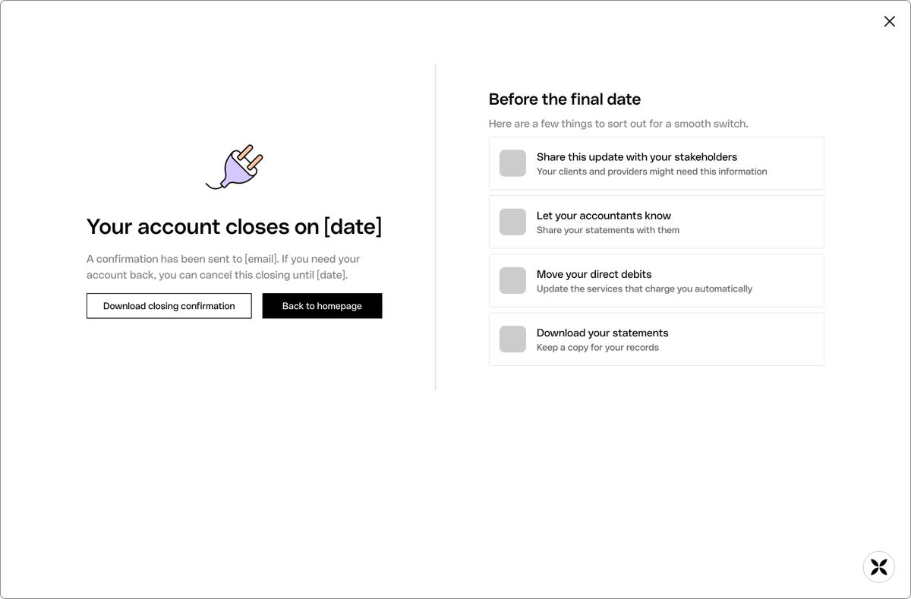
Seis pantallas, con anotaciones: por ejemplo, «Validar con stakeholders» en la solución para el saldo restante.
La solución en alta fidelidad
Diseñé seis pantallas con el sistema de diseño de Qonto y contenido realista. Cada una responde a una o varias de las hipótesis.
1. ¿Por qué te vas?
Pregunto el motivo una sola vez, al principio, para que el resto del flujo se adapte. Las opciones usan las palabras de un dueño de negocio, «Prefiero no decirlo» evita forzar una respuesta que no encaja, y «Mantener mi cuenta» y «Habla con nosotros» están siempre a un clic. (H2)
2. Recuperar: un plan más ligero
Cuando el motivo es el precio, sugiero un plan más barato antes de seguir. Se muestran ambos planes lado a lado, con lo que se conserva (IBAN, historial, configuración) y lo que cambia. «Continuar con el cierre» pesa igual que «Cambiar a este plan», así que la oferta nunca parece una trampa. (H2)
3. Prepárate para cerrar
Los requisitos pasan de lista de reglas a checklist: solo lo que bloquea el cierre pide acción y el resto es informativo, para que nada sorprenda después. Los extractos se pueden descargar en cualquier momento. (H1, H3)
3.1 Mover el saldo restante
El bloqueo más común se resuelve sin salir del flujo: la persona añade el IBAN de su nueva cuenta y se envía todo el saldo. Si aún no tiene otra cuenta, puede dejar el dinero en Qonto por ahora. Esta opción es una propuesta que hay que validar con Ops, Compliance y Finanzas. (H1, H3)
4. Una última mirada antes de cerrar
Un resumen con la fecha de cierre y cómo se reembolsa la parte no usada del plan; al lado, qué deja de funcionar y qué se conserva. Con un interruptor se avisa al equipo que perderá el acceso. Una confirmación explícita deja claro que cerrar es permanente y «Mantener mi cuenta» sigue junto a la acción final. (H4, H5)
5. Tu cuenta se cierra el [fecha]
Un estado claro: la fecha de cierre, una confirmación por email, una prueba descargable y una línea de tiempo de lo que ocurre, incluido hasta cuándo se puede cancelar. Debajo, tareas para una transición ordenada: compartir los nuevos datos bancarios, avisar a la asesoría y mover los adeudos. (H3, H4)
Qué haría a continuación
Validar el diseño
Validar con el equipo
- Producto: qué alternativas se pueden ofrecer (plan más ligero, pausa, traspaso de titularidad)
- Ingeniería: si la checklist puede mostrar en tiempo real el estado de cada requisito
- Ops, Compliance y Finanzas: la propuesta de cuenta de custodia y los plazos de conservación de datos
- Content Design: el texto final y la redacción exigida legalmente
Medir
Explorar más adelante
- Emails recordatorio antes de la fecha de cierre
- Flujos para los otros motivos (pausa, traspaso de titularidad)
- Versión móvil del flujo
Qué me dejó este ejercicio
Lo que más me llevo es que, para una empresa, cerrar una cuenta es una migración y no un clic: el trabajo real ocurre fuera del banco. Diseñar el cierre como una ayuda —comprobar requisitos, mover el saldo, avisar al equipo y a la asesoría— cambia el planteamiento de todo el flujo.
También aprendí a equilibrar tres objetivos que tiran en direcciones distintas —proteger, aprender y retener— con una regla clara: proteger primero, aprender después y retener solo cuando de verdad ayuda. Y a dejar explícito qué queda como hipótesis por validar, como la propuesta de cuenta de custodia o las conclusiones de una sola entrevista.